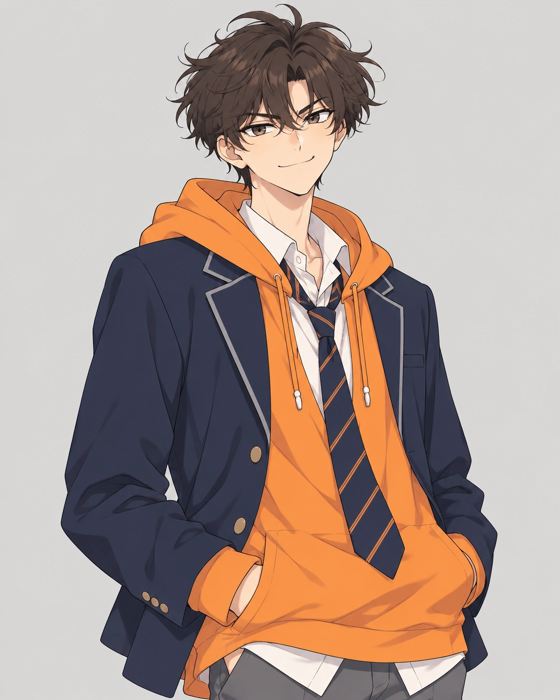
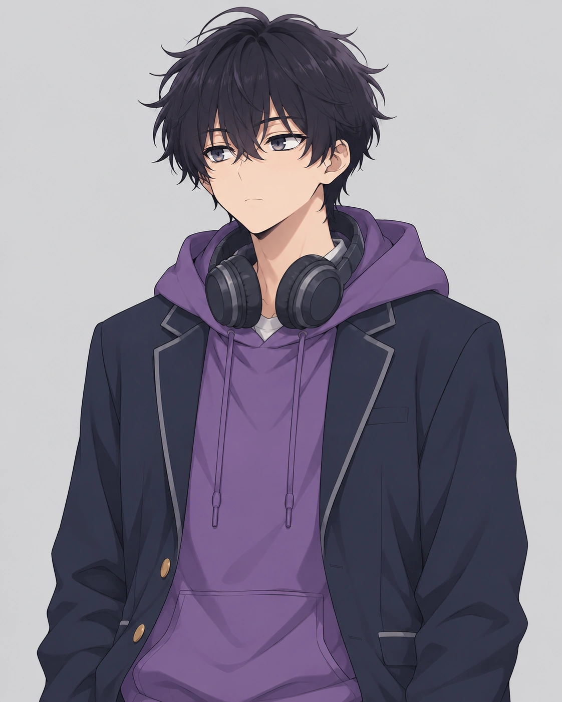
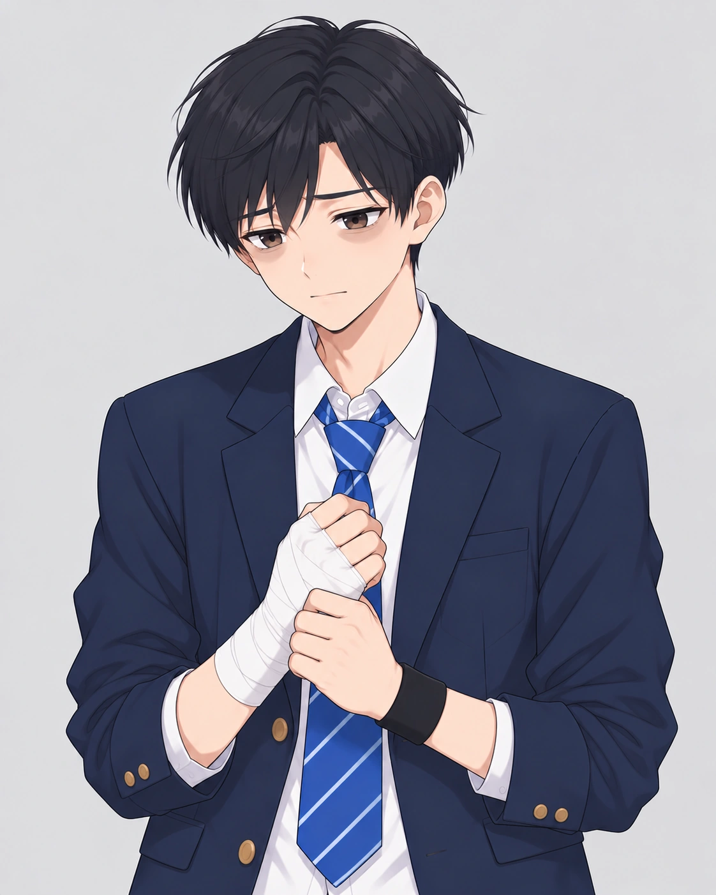
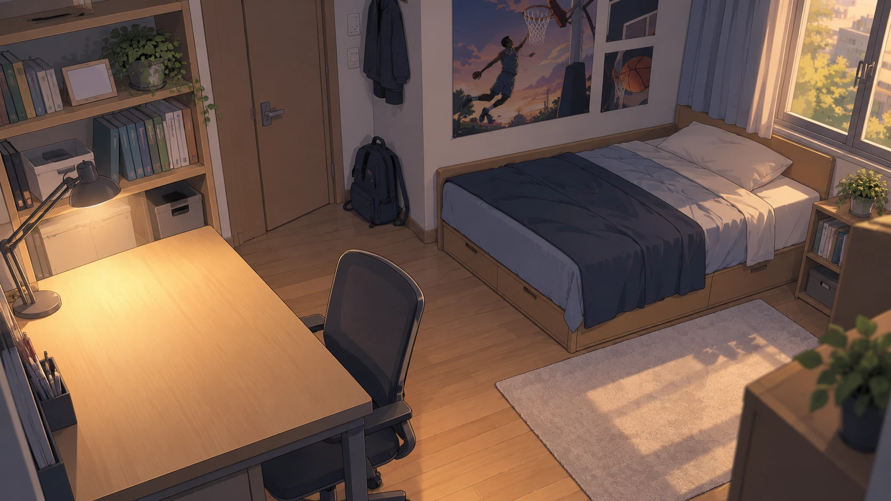

CLASSIFIED · ACTIVE CASE
NAKTO CULTURE FESTIVAL 2026
사라진
도근이를 찾아라
평소 활발하고 성실했던 중학교 2학년 김도근. 목요일 밤 이후 휴대전화가 꺼졌고, 학교에도 집에도 나타나지 않았다.
CASE 2026-DKMISSING

이름
김도근
상태
연락 두절
평소 활발하고 성실했던 중학교 2학년 김도근. 목요일 밤 이후 휴대전화가 꺼졌고, 학교에도 집에도 나타나지 않았다.
성실하던 도근이는 최근 지각과 결석이 늘고, 손에 붕대를 감은 채 학교에 나타났다. 주변 친구들에게 돈을 빌렸다는 이야기도 들린다.
그리고 축제 D-3 목요일, 점심시간 농구장에서 친구와 다툰 뒤 그날 밤 휴대전화가 꺼졌다.
8개의 미션을 해결하고 현장·증언·디지털 기록을 분석하여 왜 사라졌는지, 누가 영향을 주었는지, 지금 어디에 있는지 밝혀내십시오.
각 팀의 수사 결과를 이곳에 모아 사건의 전체 그림을 완성하세요.
김도근은 최근 지각·결석이 늘었고 손에 붕대를 감은 모습이 확인됐다. 목요일 점심 농구장 다툼 이후 그날 밤 연락이 끊겼다.
추측보다 서로 다른 단서가 일치하는 지점을 찾는다. 성적 압박은 배경일 수 있지만 직접 원인은 별도로 확인해야 한다.
현장 미션 성공 후 아래 인증 버튼을 사용하세요.
이번 단계에서는 인물 카드와 관계만 연결했습니다. 선택형 심문 대화는 다음 통합 단계에서 활성화합니다.



메신저·SNS·알림을 실제 앱처럼 탐색하는 인터랙티브 화면이 들어갈 자리입니다. 현재는 전체 게임 구조 확인을 위해 잠금 상태로 유지합니다.
투명 단서 오브젝트를 겹쳐 클릭하는 현장 조사 시스템의 기반 화면입니다.



지금부터 타이머가 시작됩니다.
부스 현장에 부착된 미션 QR 코드를 비춰주세요.
미니게임을 해결하여 획득한 암호 코드를 입력하세요.
(대소문자 구분 없음)
8개의 단서를 분석하여 도근이 실종의 전말을 확정하세요.
도근이는 도박 문제와 동훈의 고리 대출·협박을 혼자 감당하다 사라졌습니다. 도박을 처음 알려 준 재연, 도근이를 몰아붙인 동훈, 그리고 도근이를 숨겨 준 준혁의 단서를 연결해 도근이의 위치를 찾아냈습니다. 여러분의 추리로 도근이는 전문 상담기관(1336)과 부모님의 품으로 구조했습니다.